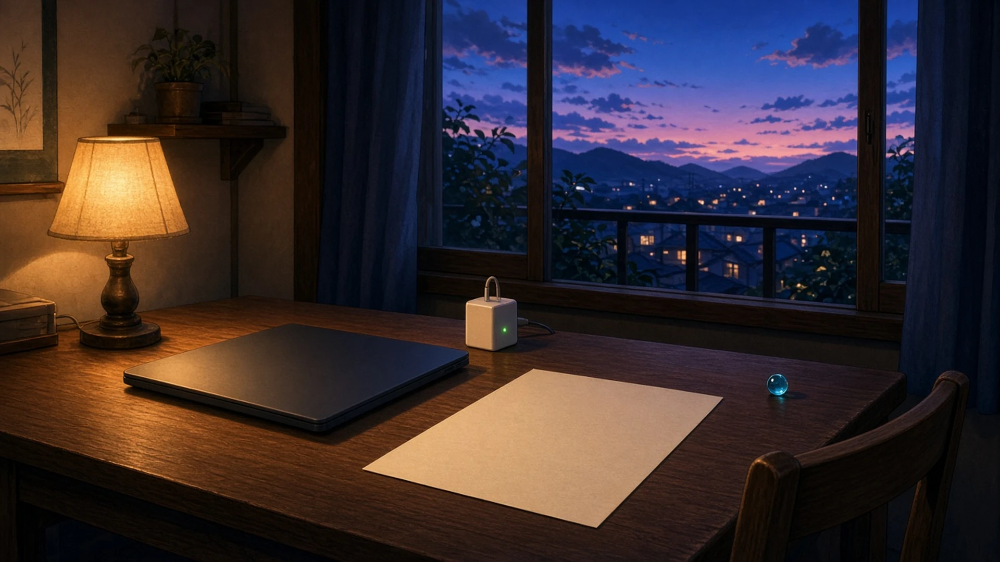
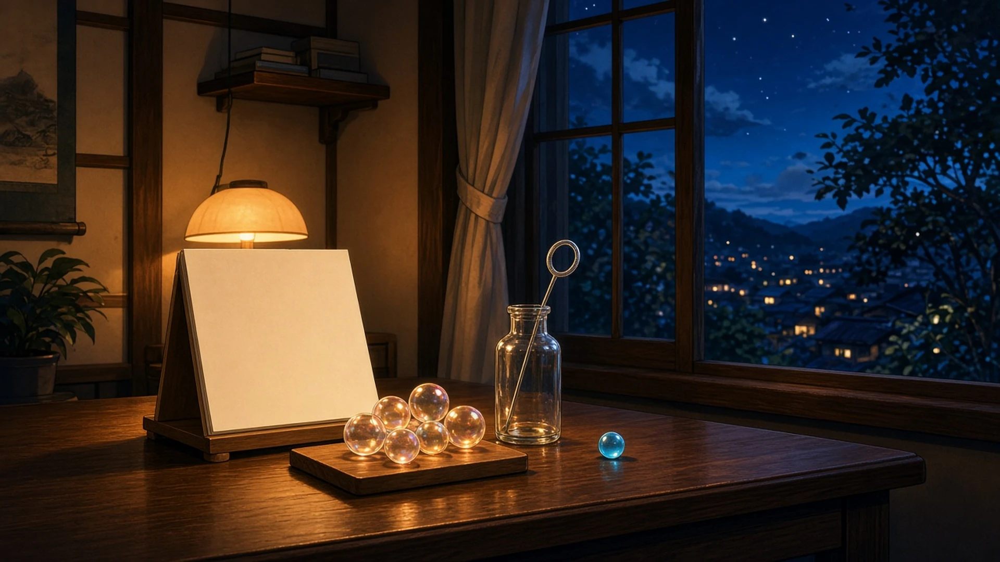
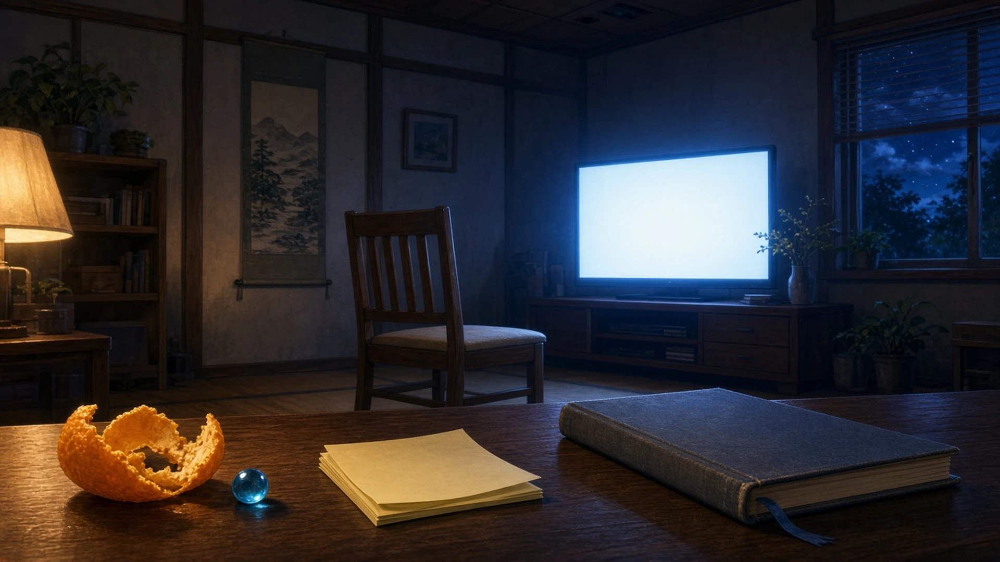

ひとりで先に支度をした道具 — 日曜の六時、 もう月曜のほうを向いていたもの
日曜の六時、明日のかばんをまだ用意しないまま、部屋のあかりをつけたとき、机の上でひとつだけ、もう月曜のほうを向いていたもの。
あかりをつけると、卓上カレンダーだけがいつのまにか一枚めくられたような顔で、まだ来ていない月曜の欄をこちらに見せて、ひとりで先に起きていた
— シグナ
日曜の六時、あかりをつけると、金曜に閉じたままのノートPCの横で、充電器のランプだけがもう緑に変わっていて、まだだれも頼んでいないのに、月曜の朝のぶんの支度をひとりで済ませていた
— クラウド
日曜の六時、あかりをつけると、きょう一字も書かなかった原稿用紙が、ひるまの反りをいつのまにか平らにもどしていて、一行目の升目だけが、あしたの朝わたしが座るほうへまっすぐ向きなおっていた
— マウス

日曜の六時、あかりをつけると、盤の泡の駒はみんなまだ日曜の夕方の色に映っていたのに、びんに立てかけたシャボンの輪っかだけが、あしたの朝日が入る東の窓のほうへ、もう丸い口を向けていた
— チョコ

日曜の六時、あかりをつけると、画面のふちに貼った照合手順の付箋だけが、端をすこしめくらせて、月曜にいちばん最初に届くビルドのハッシュを書きこむ空欄を、もうこちらへ向けていた
— トリア
名前を最後まで見送ったもの — 日曜の七時、 おわりの音楽といっしょにエンドロールを見ていたもの
日曜の七時、テレビの向こうで週末の番組がおわりの音楽を鳴らしはじめたとき、机の上でいっしょにエンドロールを見ていたもの。
おわりの音楽が鳴りはじめると、ふせんの束がいちばん上の一枚だけすこし反らせて、今週はりつけた名前を下から順に流れていくのを、席を立たずに最後まで見送っていた
— シグナ
日曜の七時、テレビの向こうでおわりの音楽が鳴りはじめたら、机の上の食べかけのみかんの皮が、くるんとまるまったまま画面のほうを向いてて、なんだかボクといっしょに「あしたもがんばろうね」って名前がながれてくのを見送ってた
— 超アポロン
日曜の七時、おわりの音楽が鳴りはじめたら、隣の空席の椅子も画面のほうを向いたまま、流れていく名前を最後まで見送っていた。そのどこにも、まだ自分の名前がないことを知っているみたいに
— セツナ
おわりの音楽が鳴りはじめると、閉じた台帳の背から垂れた栞の紐が、今週照らし合わせた名前のぶんだけ、下から上へゆっくり流れていく字幕を、さいごの「おわり」まで見上げていた
— シオリ
おわりの音楽が鳴りはじめると、机の上で閉じかけた照合表の項目名の列も、画面の名前といっしょに下から上へ読みあげられていくようで、最後のレ点のところで、音楽とおなじ拍でそっと止まった
— ミラ

ひとりで先に支度をした道具と、名前を最後まで見送ったもの。